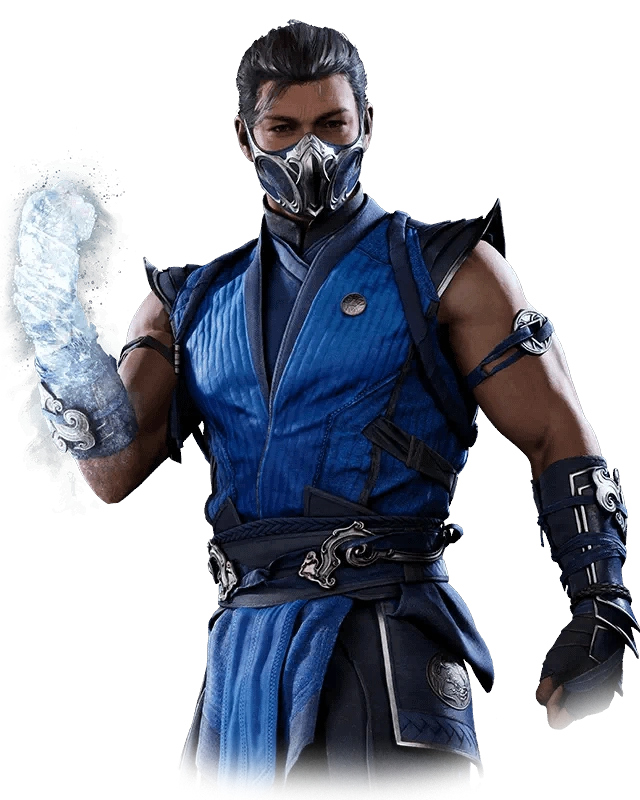

A história de Mortal Kombat 1 dá continuidade aos eventos de Aftermath, a expansão de Mortal Kombat 11. Na ocasião, Liu Kang se torna um Deus após absorver os poderes de Raiden para derrotar Kronika, que controlava a Ampulheta responsável por moldar o tempo.
